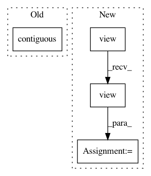

1b809b3c9570d617cb26949e40b921b36e826580,gpytorch/lazy/kronecker_product_lazy_variable.py,,_matmul,#Any#Any#,17
Before Change
factor = lazy_var._matmul(res).permute(1, 3, 2, 0)
res = factor.contiguous().view(n_batch, -1, n_cols)
else:
res = res.t().contiguous().view(n_cols, lazy_var.size(-1), -1)
factor = lazy_var._matmul(res)
if factor.ndimension() == 3:
factor = factor.permute(2, 1, 0)
After Change
n_batch = res.size(0)
res = res.view(n_batch, lazy_var.size(-1), -1)
factor = lazy_var._matmul(res)
factor = factor.view(n_batch, lazy_var.size(-2), -1, n_cols).transpose(-3, -2).contiguous().view(-1, n_cols)
res = factor.contiguous().view(n_batch, -1, n_cols)
else:
res = res.view(lazy_var.size(-1), -1)
factor = lazy_var._matmul(res)
In pattern: SUPERPATTERN
Frequency: 4
Non-data size: 4
Instances
Project Name: cornellius-gp/gpytorch
Commit Name: 1b809b3c9570d617cb26949e40b921b36e826580
Time: 2018-08-31
Author: gpleiss@gmail.com
File Name: gpytorch/lazy/kronecker_product_lazy_variable.py
Class Name:
Method Name: _matmul
Project Name: zhanghang1989/PyTorch-Encoding
Commit Name: d539ddfafb8e62fafa536a35fe21691047402445
Time: 2017-11-16
Author: zhang.hang@rutgers.edu
File Name: encoding/nn/encoding.py
Class Name: EncodingP
Method Name: forward
Project Name: cornellius-gp/gpytorch
Commit Name: 1b809b3c9570d617cb26949e40b921b36e826580
Time: 2018-08-31
Author: gpleiss@gmail.com
File Name: gpytorch/lazy/kronecker_product_lazy_variable.py
Class Name:
Method Name: _t_matmul
Project Name: cornellius-gp/gpytorch
Commit Name: e5970f0a822c210b2859708b9556878b01c5b59f
Time: 2017-09-09
Author: ruihan.wu14@gmail.com
File Name: gpytorch/utils/kronecker_product.py
Class Name:
Method Name: kronecker_product_toeplitz_matmul